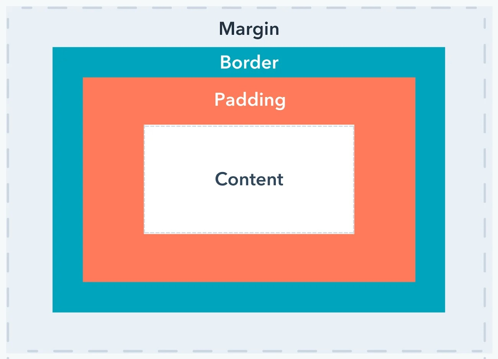

Technical blog
What is the difference between Margin, Border, and Padding?
Friday, 06 September 2024
Margins, borders, and padding are key to web design layout and the visual effect you are trying to achieve with your content.
HTML (Hypertext Markup Language) and CSS (Cascading Style Sheets) are two key languages necessary for creating webpages. HTML sets the content and structure of a webpage. CSS determines its design and display.
Margins, borders, and padding are the spaces around your HTML content and between your HTML structure. CSS sets the design and display parameters for your margins, borders, and padding.
- Content: Your content where text, images, videos, and links appear.
- Padding: This is the space around your content. And between your content and any border.
- Border: The border goes around your padding and content. Borders can be transparent or non-transparent.
- Margin: The defined space around or outside the border. The margin is transparent.
The CSS Box below illustrates margins, borders, and padding in relation to content. It is used for webpage design and layout as almost all HTML elements in a webpage sit in a CSS Box comprised margins, borders, and padding in relation to content.

The padding property controls the space inside an element, the margin property controls the space outside an element, and the border property controls the space (or border line) between the two.
Demonstrating the CSS Box
The CSS Box wraps around every HTML content element. It consists of padding, borders, and margins.
Generally, you should use margins when you are adjusting the spacing of an element in relation to another element and padding when you are adjusting the look of an individual element. And borders where needed for effect.
- The padding of content elements can be defined by the padding-top, padding-bottom, padding-left, and padding-right properties, or the shorthand padding property depending on whether you want to set different padding for each side of the CSS Box or the same for each side.
- The border adds a line around the content-padding area. The border line color, style, and thickness can be defined by the border-width, border-color, and border-style properties. Or the shorthand border property can define these. Border-style values include dashed, dotted, double, groove, ridge, and none.
- The margin is the empty space outside the content-padding-border and between any neighboring elements. Its size can be defined by the margin-left, margin-right, margin-top, and margin-bottom properties, or the shorthand margin property.
There are some crucial differences between padding and margins. For example, the background padding area of a CSS Box is specified by the background property of the element, while margin backgrounds are always transparent. Padding increases the size of an element, while margins increase the gaps between an element and its neighbors. And element padding areas do not combine, while in CSS, margins that adjoin can combine to form a single collapsed margin. These differences are set out in the table below.
Padding and margin differences
| Differences | Padding | Margin |
|---|---|---|
| Position in CSS Box | Internal space | External space |
| Effect on element size | Increases size | Affects layout spacing |
| Interaction with background and border | Extends background and affects borders | No interaction with the background / border |
| Collapsing margins | No collapse | Can collapse |
| Spacing control | Controls internal spacing | Controls external distance |
| Influence on clickable areas | Expands clickable area | Doesn't affect clickable areas |
| Visibility in backgrounds | Background extends and enhances appeal | Doesn't extend background |
| Adaptability in Responsive Design | Crucial for responsive design | Uniform arrangement across devices |
| Interplay with CSS Box sizing | Influenced by box-sizing | Consistent regardless of box-sizing |
| Overlap and collisions | May cause overlap | Prevents overlap |
Key references
Hubspot A Basic Walkthrough of the CSS Box Model
Hubspot CSS Margin vs. Padding: What's the Difference?
W3 Schools CSS Box model